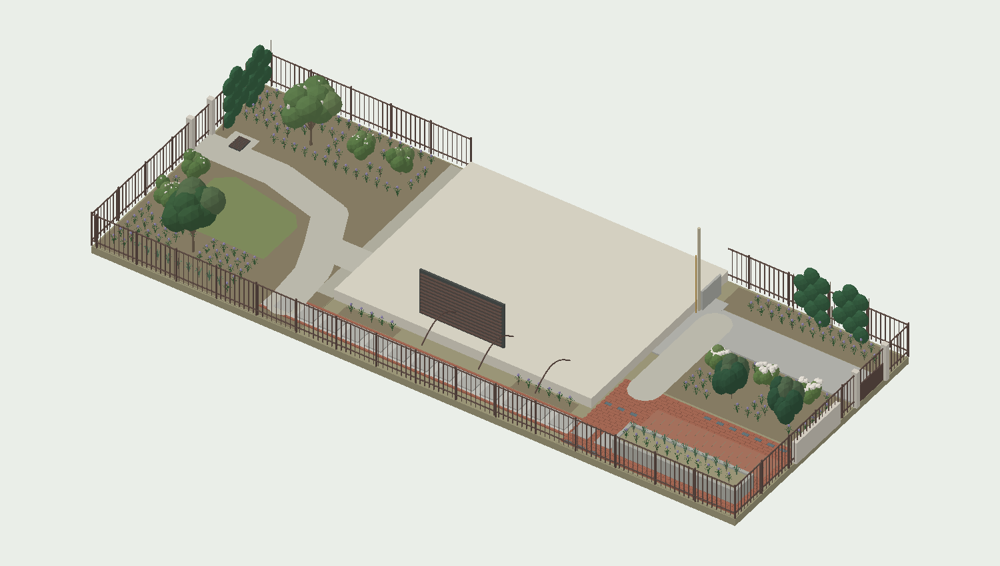
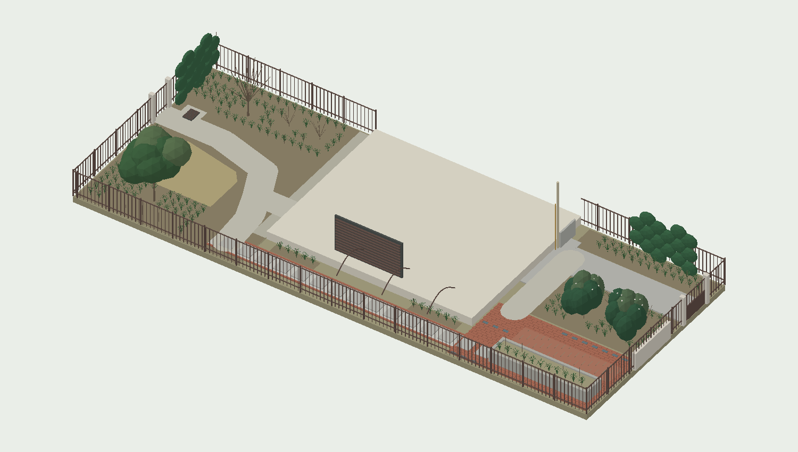

01 / 现状重建与尺寸校正
以13张照片及约57秒连续视频建立空间关系，再用你的手写图校正外框。视频依次经过南侧裸土院、东侧通道和北侧种植池院；部分航拍图可能较早，拍摄日期未核实。模型清除了临时袋子、工具、板材、活动盆栽与菜架；灰色墙面板件、百叶、管线和原有轻型拱架仍作为固定或待确认构件保留。

| 项目 | 本版采用 | 依据 / 限制 |
|---|---|---|
| 总外框 | 25 × 10 m，250 m² | 25 m = 7 + 18；按图包含建筑占位，不是250 m²净花园 |
| 北院 / 南院 | 7 × 10 m / 8 × 10 m | 用户手写尺寸 |
| 建筑 / 通道 | 建筑长10 m；通道沿墙长约10 m | 25−7−8=10；侧宽暂2.1 m，建筑进深暂7.9 m |
| 室外面积 | 约171 m² | 以矩形建筑79 m²相减；凹凸与通道宽变化会改变面积 |
| 北院红砖区 | 约7 × 4 m | 4 m按东端区域深度解释；不是池体尺寸 |
| 主灰路 | 宽1.6 m；中心Z=7.8 m暂定 | 左边4 / 5 / 1.6 m分段不能与总10 m直接闭合 |
| P1 / P2 | 各4.8 × 1.08 × 0.55 m；池间约0.48 m | 仍为影像比例估值；壁厚、土深、底板与出水口未量 |
| 模型坐标 | X正向为南；Z正向为西；Y向上 | 原点在北/东围栏角；平面图左北、右南、上东、下西 |
已辨认到的现有植物以菜作、攀援与自生覆盖为主，无法凭影像可靠鉴定树种。围栏外的大树及灌木不能视为自家可拆植物，也未虚构为确定遮阴体量。保留价值需通过全株、树干、叶片近照与归属核实。
02 / 尚未校准的局部
| 未知项 | 当前处理 | 解决证据 |
|---|---|---|
| “5 m”标记两端 | 不强行拉伸10 m总宽；继续使用Z=7.8 m灰路中心 | 一条注明端点的尺寸线即可 |
| 侧通道最窄净宽 | 围栏到墙2.1 m；踏步0.62 m，碎石带0.88 m | 墙凸、窗开启后净宽及百叶维修要求 |
| 建筑高度与门窗 | 高12.8 m占位，开口仅示意 | 首层尺寸串、窗门宽高、层高照片 |
| 池体及池底 | 不把混凝土底板画成已知；B拆P2范围暂按5.18 m² | 池外长宽高、土深、排水孔与局部探查 |
| 标高与排水系统 | 平模型，只标可见格栅；不编造地下管道 | 门槛/路面/格栅/管底标高，雨后照片与出水去向 |
| 邻窗与植物遮阴 | 视线按代表方向测试，非邻居精确坐标 | 从目标房间、院门和围界约1.6 m眼高拍照；标邻窗高度 |
| 土壤、根域及供货 | 地栽与排水均为实施条件，品种需核苗 | 土层、pH、渗水检查；苗圃品种标签及实物尺寸 |
这些未知项不会阻断本轮设计比较；它们影响施工放线、排水和最终采购。模型不是测量成果，也没有宣称隐藏部分已校准。
03 / 总体概念：林缘、花带、留白
借用英式花园的空间语言：有深度的边缘、重复的植物群、经过控制的花色和开放的地面。主色为不同深浅的绿色，白花提供季节亮点，鸢尾与山麦冬带少量柔紫。成熟后的冠幅比第一天的“满铺”更重要。
北院承担最完整的常绿主景；南院以两株小乔木和夏花回应，中心保留活动与观赏余地；东侧通道沿低叶带连续，百叶和管线前留空。活动椅可以临时搬入。设计没有固定坐凳、餐桌区、厨房或新增凉棚。

由实际GLB几何生成的示意预览，建筑作低位剖切以看清庭院；不是照片合成。网页可显示完整建筑。
04 / A、B、C 的结构性比较
| 维度 | A 保留双池 | B 保留P1，拆P2 | C 拆除双池 |
|---|---|---|---|
| 空间与外观 | 双长池形成平行花带；南院矩形草坪与直线通路 | P1成为边界花带，内侧空间打开；北院林缘与南院轻折通路呼应 | 低连续花境替代双池；南院地被岛与环路，地面更整体 |
| 平衡与视觉重量 | 仍有两道高墙；以统一浅暖灰矿物质修补面、低叶片弱化 | 保留一条记忆，减少中间阻挡；本案综合最均衡 | 减少高池体量最多，但要控制植物总量，避免满院灌木 |
| 通行 | 池间约0.48 m不是主路；走池端和原有灰路 | P2拆后约5.18 m²重获平地；接北院1.2 m连接路 | 北院连通花境占去原砖面一部分，外侧通路仍要保留；南院环路最长 |
| 隐私 | 茶梅与局部络石承担；低矮双池本身不提供完整隐私 | 集中屏蔽关键低层视线，中央保留深度 | 北院增加两株地栽茶梅，有更多屏蔽深度，夏季通风须保留 |
| 种植潜力 | 池内只种低宿根，土深和排水有约束；两条花带可重复 | P1宿根带+主要地栽灌木；拆一池不被迫增加高维护植物 | 约14 m²连通地栽区可改善根域；前提是起砖并处理原池基 |
| 长期维护 | 两池易够到，但窄缝积叶清理繁琐；草坪需剪 | 一个池易管；两株树、少量绣球和小草坪属于低至中等维护 | 无割草任务，但环路边缘与较多地被在前两年更需除草 |
| 施工干预 | 双池检查排水、修补表面；两院铺装大体保留 | 拆P2、局部补红砖；P1修补及排水改善；新增短连接路 | 双池拆除、局部起砖、地栽土壤改善；南院环路铺设较多 |
| 相对成本 | 通常最低；若双池排水/开裂严重，可能不便宜 | 通常中等；受拆池清运、地砖可配性及暗埋构造影响 | 通常最高；不割草的后期节省不能抵消所有土建增量 |
| 主要优点 | 改造小，保留最多；适合预算严且池体状态好 | 通行、视觉重量、铺装保留与种植量之间最平衡 | 地面和根域最连贯；适合明确不愿保留任何高池的家庭 |
| 主要缺点 | 双池体量仍在，不能仅靠植物“消失” | 需施工修补且存在色差；一个池仍需维护 | 拆改最多、初期土面最大；排水和地下结构风险暴露更多 |
{kind=link}
{kind=link}
{kind=link}
相对成本是设计判断，不是武汉施工报价。三案共同的土壤改善、苗木、灌溉与新增连接路先作为同一基础报价，再分别列池修补/拆除、清运、补砖、环路、排水改造。不要用一口价掩盖不可见的池底工程。
05 / 推荐主方案 B
推荐保留靠东侧围栏的P1，拆除靠院子内侧的P2。理由是它释放了双池中更靠中心的一道障碍，同时保留一条与东侧通道方向一致的植物带。若P1探查发现封底且无法改善排水，或修复报价接近整体重做，应重新优先比较C。
北院：P1用两列低宿根统一；茶梅在地栽区形成常绿背景，三株白花绣球置于较凉处。北院新连接路目标宽1.2 m，接回原1.6 m灰路；不强迫人穿过窄池缝。西边界以约3 m长的络石分段屏障作局部背景。
南院：桂花置于东半部，白花矮紫薇置于西半部；中心约9.7 m²结缕草保持低矮留白。约1.2 m通路连接侧通道、主要入户开口和院门；格栅周围留可揭检修的铺面。两株树均地栽，不放进未知土深的高池。
东侧通道：保留原踏步/碎石及窄边砖，不扩大成大露台。沿墙仅局部重复山麦冬；百叶前X约10–14 m段留空，藤本不攀房屋。方板0.62 m与碎石带0.88 m不能宣称满足所有通行需要：施工前检查最窄净宽，必要时只把脚下松动碎石整平、稳固，保留排水能力。
现有金属拱架只按现状存在建模。是否继续利用取决于锈蚀、固定与净高；它不构成新增遮棚，也不计划用密集藤叶封闭整条通道。
06 / 武汉气候与日照逻辑
武汉属北亚热带湿润季风气候，夏热冬冷、雨水季节集中。市政府概况列年均温16.9–17.5°C、年降水1228–1389 mm，约40%降水集中在6–8月；这些是官方概况范围，页面未注明统一的气候常年值统计期。2024年既出现强梅雨，也出现夏秋旱情，所以“雨多”不等于不需浇水。武汉市政府：武汉市概况
本案应对：雨季用疏松但不松散漂移的覆盖物、畅通排水和分组通风；夏季重点保护新根球和少量绣球；冬季依靠茶梅、桂花、络石及山麦冬维持结构。避免把耐寒性仅到轻霜的品种、需干爽夏季的英式花境植物作为骨干。
| 区域 | 方位带来的推断 | 仍需核实 |
|---|---|---|
| 北院 | 建筑在其南侧，冬季更可能有长时段遮阴；适合以半阴林缘为设计条件 | 北院不等于夏季全天阴。西晒强的位置不硬放绣球；茶梅优先局部下午遮阴 |
| 南院 | 建筑在北侧，夏季具备更强日照潜力；可承担紫薇和小草坪 | 邻树/相邻楼栋可能减少实际日照；草坪先记录数日直射时长 |
| 东侧通道 | 早晨可能见光、下午受本体建筑遮阴；能形成较凉过渡 | 墙角风口、百叶排热和遮挡必须逐段观察 |
仅用建筑高12.8 m占位、武汉纬度约30.6°和水平地面作太阳正午几何估算：夏至向北影长约1.6 m，春秋分约7.6 m，冬至约17.7 m。计算式为 H / tan(太阳高度角)。这是建筑体量假设的敏感性演示，不是实际日照小时数；高度、邻楼和树冠变化会改变结果。网页阴影是查看空间的示意日光。
茶梅与络石在武汉有直接栽培展示依据：武汉本地茶梅冬季展示；中科院武汉植物园：络石。其他植物依据原产分布及权威园艺资料筛选，仍须采购本地露地驯化苗，不能将海外栽培资料当作武汉每个角落的表现保证。
07 / 推荐方案植物表与采购规格
固定为八种观赏植物加一种草坪草，采用重复组团；不是每处换一种。规格是建议的入场苗尺度，数量是模型净量，不包含损耗。Acoma需核实本地库存；若改用本地白花紫薇，必须核对成熟体量及抗病性，不能直接用普通高大品种替换。
| 代码 / 名称 | B净量 | 建议入场规格 | 成熟与管理尺度 | 花期约值 | 光照 | 来源 |
|---|---|---|---|---|---|---|
| OS · 桂花 Osmanthus fragrans | 1株 | 高1.8–2.0 m，冠0.9–1.2 m，健康容器苗/土球苗 | 自然常达 3–6 m 或更高；本案控制高 3–4 m、冠幅 3–3.5 m | 约9–10月；品种、气温影响明显 | 日照至半日照；酷热暴晒处需水分保障 | 资料 |
| CA · 白花茶梅 Camellia sasanqua | 2株 | 高0.9–1.2 m、冠0.6–0.8 m；本地露地越冬的白花苗 | 品种可达 2–4 m 以上；本案控制高 2–2.5 m、冠幅约2 m | 约11月至翌年2月，选定品种后细化；不是单株连续开花五个月 | 半阴、明亮散射光；避西晒和干冷风 | 资料 |
| LI · 白花矮紫薇 Acoma Lagerstroemia 'Acoma' | 1株 | 高1.5–1.8 m、冠0.7–1 m，多干型 | 约3 m高、3–3.5 m冠幅；不同于7–10 m的大型紫薇品种 | 约6–9月；盛花随天气变化 | 南院日照充足位置，先核实实际遮阴 | 资料 |
| AB · 大花六道木 Abelia × grandiflora | 4株 | 高0.4–0.6 m、冠0.35–0.5 m，绿叶型 | 普通类型高约1–2.5 m、冠1.5–2.5 m；本案疏枝控制在1.2–1.5 m | 约5–10月，零续开花 | 日照至半日照；太阴花少 | 资料 |
| HY · 白花大叶绣球 Hydrangea macrophylla | 3株 | 冠0.35–0.45 m，白花类型 | 高、冠幅各约1–1.8 m；本案冠幅控制约1.2 m | 约5–7月，具体依品种 | 北院半阴；避下午热晒 | 资料 |
| TJ · 络石 Trachelospermum jasminoides | 4株 | 藤长0.8–1 m、3 L以上容器苗 | 未经管理可攀至6 m；本案限高1.8–2 m、单株宽约1.5 m | 约4–6月，白花 | 日照至半阴；阴处开花减少 | 资料 |
| LM · 阔叶山麦冬 Liriope muscari | 186株 | 10–12 cm容器苗，每丛3芽以上 | 高、丛幅约0.3–0.45 m | 约7–9月，紫色花穗 | 日照至半阴；深阴能活但生长、开花减弱 | 资料 |
| IT · 鸢尾 Iris tectorum | 20株 | 2–3芽健壮分株或容器苗 | 叶高0.3–0.45 m，花茎可稍高；丛幅约0.3–0.45 m | 约4–5月，淡紫 | 日照至半阴，通风，排水顺畅 | 资料 |
| ZJ · 结缕草 Zoysia japonica | 9.69 m² | 适季铺健康草皮，不是全年常绿草毯 | 草坪养护高度约3–5 cm；面积计量 | 不作为观花植物 | 优先日照充足；先连续记录，目标至少约5–6小时直射光，非硬性保证 | 资料 |
“阔叶山麦冬”在市场可能被笼统叫麦冬，须按 Liriope muscari 核苗。白花茶梅、白花绣球需看品种标签或花期母本；不按网络图片保证花色。未采用依靠常换草花、频繁喷药的玫瑰墙或精修黄杨球阵。
08 / 植物组、株距、数量与放样
坐标原点见平面图：X向南、Z向西，单位m。图中每个植物位置与下表、GLB来自同一份数据；详细逐株点位保存在 layouts.json。表中范围用于定位植物组，不是已实测的施工坐标。
| 组号 | 区域 | 植物 | 数量 | 建议中心距 | 点位范围 | 本组说明 |
|---|---|---|---|---|---|---|
| N01 | 1 | 阔叶山麦冬 | 11 | 0.4 m | X 0.8–4.8 Z 0.84–0.84 | P1东侧长列；池内净宽/排水待量，数量随实测调整 |
| N02 | 1 | 鸢尾 | 11 | 0.4 m | X 0.8–4.8 Z 1.28–1.28 | P1西侧长列；交错叶形，不混种十余品种 |
| N10 | 1 | 白花茶梅 | 2 | 2.1 m | X 1.35–3.5 Z 5–5 | 主院常绿骨架；五年冠幅约1.95 m |
| N11 | 1 | 白花大叶绣球 | 3 | 1.4 m | X 1.25–4.65 Z 5.95–6.15 | 仅三株，位于北院避热晒位置；保留疏松通风 |
| N12 | 1 | 阔叶山麦冬 | 11 | 0.4 m | X 0.8–4.8 Z 6.5–6.5 | |
| N13 | 1 | 阔叶山麦冬 | 26 | 0.4 m | X 0.65–5.45 Z 9.02–9.42 | 灰路边低矮连续叶带，保持1.6 m通路 |
| N14 | 1 | 络石 | 2 | 1.5 m | X 2.1–3.6 Z 9.78–9.78 | 西界仅3 m长分段屏风；高层俯视不能完全遮挡 |
| E01 | 3 | 阔叶山麦冬 | 11 | 0.4 m | X 7.6–16.1 Z 1.75–1.75 | 低叶带延续两院；百叶前10–14 m区段留检修空地 |
| S01 | 2 | 桂花 | 1 | 3.5 m | X 22.1–22.1 Z 1.55–1.55 | 树冠在院内；先探管线、根域及土层，不植入封底水泥池 |
| S02 | 2 | 白花矮紫薇 Acoma | 1 | 3.5 m | X 22–22 Z 8.2–8.2 | 夏花焦点；苗圃核对Acoma或成熟体量相当的白花抗病品种 |
| S03 | 2 | 大花六道木 | 2 | 1.5 m | X 24.05–24.05 Z 3.05–4.65 | |
| S04 | 2 | 大花六道木 | 2 | 1.5 m | X 18.75–20.25 Z 8.55–8.55 | |
| S05 | 2 | 鸢尾 | 9 | 0.4 m | X 20.4–23.6 Z 0.55–0.55 | |
| S06 | 2 | 阔叶山麦冬 | 29 | 0.4 m | X 18.2–24.2 Z 7.55–9.5 | |
| S07 | 2 | 络石 | 2 | 1.5 m | X 24.75–24.75 Z 7.95–9.25 | 南侧西端2.8 m分段屏风，离院门和格栅口留空 |
| N20 | 1 | 阔叶山麦冬 | 26 | 0.4 m | X 0.52–4.92 Z 4.47–6.07 | 成片重复的地被填充，保留木本根颈、通路与现有排水口；不以密植大灌木制造第一年效果 |
| S20 | 2 | 阔叶山麦冬 | 41 | 0.4 m | X 20.02–24.42 Z 0.42–5.22 | 成片重复的地被填充，保留木本根颈、通路与现有排水口；不以密植大灌木制造第一年效果 |
| S21 | 2 | 阔叶山麦冬 | 31 | 0.4 m | X 18.02–24.42 Z 8.07–9.27 | 成片重复的地被填充，保留木本根颈、通路与现有排水口；不以密植大灌木制造第一年效果 |
山麦冬/鸢尾约0.4 m；绣球约1.4 m起；茶梅约2.1 m；六道木约1.5 m；络石约1.5 m。树木按3–3.5 m最终冠幅预留，但墙边或邻树限制会改变树位。灌木层允许叶冠边缘轻叠，根颈不可埋入厚覆土；保留枝叶离路、格栅及检修面的余量。
P1暂定净种植宽约0.84 m，两列植物采用约0.44 m列距，沿长向各11丛，总22丛。最终池内净宽若不足，应减为一列，不以挤压根系保持数量。草坪9.69 m²为净面积，采购通常另加约5–10%裁切余量；苗木不提前加密“凑满”，先核规格再订货。
09 / 分段隐私：先判断视线，再决定高度
| 观察方向 | 应对位置 / 元素 | 效果与残余 |
|---|---|---|
| 北侧公共路径 → 北院主景 | N10茶梅与前层植物，保持非连续边界 | 第三年开始缓冲低层视线；第一年冠幅不足，不能宣称即时完整隐私 |
| 西侧邻院 → 北院窗口 | N14络石限高约1.9 m、总长约3 m | 遮关键小段，余处保留开口与纵深；冬季比落叶灌木可靠 |
| 南侧路径/邻院 → 南院 | 桂花、六道木错位成层；南界西端S07络石 | 桂花提供较高常绿冠层，络石补低位。六道木冬季可能落叶，不能作为唯一屏障 |
| 院门打开 → 房屋 | 保留通行，利用偏折的南院通路减少直线贯穿 | 打开的北院门仍可能沿灰路直视房屋，无法靠两旁绿植完全消除 |
| 周边上层窗 → 两院 | 小乔木仅选择性遮住部分角度，核实窗口后小幅移位 | 高层俯视仍存在；不为遮挡所有高层窗栽连续高墙式树篱 |
| 房屋自身向外看 | 低宿根在前、灌木中层、小树在侧；百叶前留空 | 保留光线、出入口和检修视野，不把树冠贴在玻璃上 |
视线高度可用直线插值核实。例如纯示例：界外3 m处有6 m高窗，界内4 m处目标视点高1.5 m，则围界处视线约4.07 m高，1.9 m络石无法阻挡。现场若真有此类窗口，应在靠近目标处用树冠局部遮挡，并结合室内轻帘；本模型没有虚构这扇邻窗的位置。
现有围栏承受藤本后风荷载增加，支撑需检查。采用窄段、可修剪的络石，植物不攀燃气/用途未明管线，不堵门扇，不以公共绿化提供“保证隐私”。
10 / 四季兴趣与冬季诚实呈现
| 时段 | 主体 | 本案取舍 |
|---|---|---|
| 春（约3–5月） | 鸢尾、络石白花，常绿新叶 | 同一物种分段重复；网页是季相组合，非保证同日齐开 |
| 夏（约6–8月） | 矮紫薇白花、绣球前段、山麦冬紫穗，深浅绿叶 | 少量花色与阴影；高温期不追求天天满花 |
| 秋（约9–11月） | 桂香、六道木零续开花、紫薇秋叶，茶梅渐入花期 | 花期随品种和年份变化；以绿叶状态为常态 |
| 冬（约12–2月） | 茶梅与桂花、络石、山麦冬保持骨架 | 紫薇/绣球落叶，六道木可能落叶，草坪变稻草色；网页冬季按较冷情景显示 |
每株的生长尺寸与物候不是同步的时钟。网页春夏秋冬按钮展示大致季相；不表示一株茶梅连续开整个冬季，也不表示夏花全在同一天开放。不开花时仍靠叶片、树干、群落轮廓和红砖关系维持画面。
11 / 排水、根域与保留铺装
现状格栅保留，在南院通路旁留约0.95 × 0.98 m可接近的检修铺面。模型没有地下管道或确定坡箭头，因为格栅的性质、管底标高与最终出口还未知。所有新增材料尽量与保留砖面平接，不把水推向门槛。
- 先用水平测量建立门槛、铺面、树池土面和格栅标高关系，确认合法出水路径。参考约1–2%的面层找坡仅作初步设计范围，最终依材料、距离及实测落差确定；不能未经核实直接按1%施工。
- 清理落叶、淤泥与现有排口，雨后记录积水位置和消退时间。原砖若积水，优先局部揭铺调基层，不为保留每块原位砖而牺牲排水。
- 探查P1是否通土及底部积水。宿根带希望有至少约25–30 cm有效疏松土层并保持排水；这是本案目标而非当前已知。出水孔不能直接排到易打滑通道上。
- B拆P2时先定位暗埋设施，再分段拆墙、清运、确认基底。原位土、回填或底板三种情况对应不同补砖做法；不可在松土上直接薄铺砖面。
- C须把原池底和连接处局部铺装处理为真正连通的可种植土层。只盖一层土在整片混凝土上，不能支持模型里的地栽灌木。
- 树木根区要连接到足够土量的原土带，避基础、管线与检查井。若浅层全是施工废料，先改善连续根域或减少树木；不把孤立深坑当排水方案。
不要默认在黏土坑底铺一层碎石就能“排水”；若没有可用出水路径，它仍可能成为积水盆。也不盲目往重黏土里少量掺沙。按渗水、土质和出口条件决定整体土壤改善、浅沟/暗排或抬高种植面。
花境表面铺约4–5 cm有机覆盖层并远离根颈；墙边防潮和白蚁检查要求以房屋做法为准。地面标高不得埋没防潮层、透气口、排水孔。覆盖物用量按实际花境净面积乘厚度计算，不能拿171 m²全部计入。
12 / 把养护量控制在普通家庭能承担的范围
主方案的维护水平是低至中等：有小草坪、三株绣球和少量藤本，因此不是“种下就不用管”。用重复地被减少长期裸土，用自然冠形减少频繁修球；不设水景、季节草花更换区或需要爬高修剪的整面藤墙。
浇水按根区而非日历：前几周每1–2天检查根球和周边土，缺水才浇透；降雨后暂停，防止根球内外干湿不同。夏季高温/风口更勤检查，成活后延长间隔、加深单次湿润。绣球与树木/耐旱地被分阀，优先可过滤、能冲洗的滴灌或滴水管。没有土壤和滴头流量资料，不提供虚假的固定“每株每天几升”。
| 植物 | 水分管理 | 养护要点 |
|---|---|---|
| 桂花 | 前两年根球保持均匀湿润；成活后旱热期深灌，忌积水 | 花后选择性疏枝；保留自然冠形，检查介壳虫。不是每年截顶的小球。 |
| 白花茶梅 | 中等；微酸性疏松土，保湿但不涝 | 花后轻疏，勿秋季齐剪花芽；巡查介壳虫、根腐及花腐。先测土壤pH。 |
| 白花矮紫薇 Acoma | 中等；成活后耐短旱，热旱期深灌 | 选抗白粉病品种仍需通风；冬季只疏交叉枝，禁止“砍头”。Acoma本地库存尚未确认。 |
| 大花六道木 | 中低；首年规律检查，成活后旱时补水 | 冬季可能落叶或冻梢，不能独担冬季隐私；早春疏老枝，保留拱垂形。 |
| 白花大叶绣球 | 中高；本案用量少，独立滴灌分区；不可常年涝根 | 老枝开花类型花后轻剪，冬季勿一律齐根剪；雨季通风，留意叶斑、白粉病。白花不承诺随pH变蓝。 |
| 络石 | 中等；前两年规律检查，成活后旱时补水 | 仅牵引指定小段，花后及夏末整理；避开窗、百叶、管线；支撑及围栏抗风荷载须核实。 |
| 阔叶山麦冬 | 中低；第一年保湿，成活后旱时浇透，忌冠部积水 | 早春新叶萌发前可清理旧叶；3–5年拥挤时分株。采购丛生种，不误买蔓生近缘种。 |
| 鸢尾 | 中低；不可将陆生鸢尾当水生植物 | 根茎浅栽、勿厚埋；花后剪残梗，3年左右分株，检查蜗牛和烂根。冬季叶况随低温变化。 |
梅雨期避免傍晚频繁喷叶、过量氮肥和把叶冠挤成不透风的墙。巡查叶斑、白粉、介壳虫、烂根，先改善水分与通风、去除病残组织，确诊后才选择本地登记允许的处理方式，不制定全年预防性喷药套餐。抗病品种表示风险较低，不是免疫。
小草坪生长季通常7–14天检查修剪需求，遵守一次不去掉超过约1/3叶长；按结缕草实际长势调整。冬季休眠，不用黑麦草覆播维持假常绿。若实测光照明显不足，把草坪改成同一种山麦冬即可延续语言，约0.4 m网格需增约60丛（扣除边界与树根后复核）。
13 / 第1、3、5年：允许花园逐步成形
模型按表中的建议入场苗起算。尺寸是健康建植、正常浇水、适度疏剪下的示意管理目标；不是生长率测量或保证，不按统一倍数放大所有植物。每组根系、苗源和实际光照会改变结果。
| 阶段 | 空间样子 | 维护重点 |
|---|---|---|
| 第1年 | 灌木之间有明显空隙，地被尚未闭合，络石不完全遮挡 | 覆盖土面、除草、检查根球水分、牵引枝条；不通过多买大灌木强行填满 |
| 第3年 | 茶梅与绣球开始形成层次，地被连片；南院树冠仍相对轻 | 开始选择性疏枝，确认实际视线；检查通道边缘是否受侵占 |
| 第5年 | 树冠及灌木成为空间主体，前后层轻叠，局部需要分株 | 保留通路净宽，分株山麦冬/鸢尾，疏灌木基部；按管理冠幅维护而非逐年变大 |
| 植物 | 第1年 高×幅 m | 第3年 高×幅 m | 第5年 高×幅 m |
|---|---|---|---|
| 桂花 | 2 × 1.1 | 2.7 × 2.1 | 3.3 × 3 |
| 白花茶梅 | 1.1 × 0.75 | 1.7 × 1.35 | 2.2 × 1.95 |
| 白花矮紫薇 Acoma | 1.7 × 1 | 2.35 × 2 | 2.85 × 3.2 |
| 大花六道木 | 0.6 × 0.5 | 1.05 × 1.05 | 1.4 × 1.5 |
| 白花大叶绣球 | 0.5 × 0.45 | 0.9 × 0.95 | 1.2 × 1.2 |
| 络石 | 1 × 0.45 | 1.8 × 1.15 | 1.9 × 1.5 |
| 阔叶山麦冬 | 0.22 × 0.2 | 0.35 × 0.36 | 0.4 × 0.44 |
| 鸢尾 | 0.25 × 0.2 | 0.4 × 0.35 | 0.42 × 0.42 |

B · 第5年冬季：保留常绿骨架，落叶木本露枝，草坪呈休眠色。实际冷暖年份会改变叶况。
第五年不等于所有植物自然成熟的终点。桂花、茶梅未经管理会继续长大；种植表已区分天然潜力与本案控制尺寸。若需要连续重剪才能塞进场地，应该减少或换小体量品种，而不是长期依赖强剪。
14 / 基本年度养护表
| 时间 / 触发 | 工作 | 频率提示 |
|---|---|---|
| 1–2月 | 查排水和冻损；茶梅花后再决定轻剪，不齐剪所有常绿 | 雨后检查；寒潮后观察，不立即重剪未确认死枝 |
| 2–3月 | 紫薇轻疏交叉枝；山麦冬新芽前清旧叶；六道木疏老枝 | 集中一次，按物候调整 |
| 3–4月 | 土壤温度合适时补植、少量堆肥或按检测施肥；查灌溉滴头 | 建植缺株补齐，不全面重复施肥 |
| 4–5月 | 花后整理络石与鸢尾残梗，开始草坪生长观察 | 藤本不让其触及百叶、窗与管线 |
| 6–7月 梅雨 | 疏通格栅，检查积水、叶斑和根腐；雨够时停灌 | 大雨前后检查，湿热期每周巡看 |
| 7–9月 热旱 | 晨间查土与根球、必要时深灌；草坪按长势修剪 | 新植苗可需每日检查；成活后不是每日固定浇 |
| 9–10月 | 桂花观花后轻疏；藤本限界；条件适宜时分株和秋植 | 不在临寒前用高氮催嫩梢 |
| 11–12月 | 收集病叶、清理窄缝及格栅，适度补覆盖物 | 保留正常冬季骨架；不将落叶灌木全部剪平 |
| 第3–5年及以后 | 地被拥挤时分株，校正树冠/屏障宽度与实际视线 | 按拥挤触发，而非机械每年分株 |
家庭工作量的主要峰值在建植、梅雨检查和夏季水分/割草。每次庭院巡查顺便检查枝叶是否侵入门扇、窗扇和通路，比年底一次性重剪更容易维持质量。
15 / 模型、网页和实施交接
主文件 garden.glb 为推荐B方案第3年夏季示意，采用米、Y向上；现状独立保留，A/B/C各含第1/3/5年。架构、铺装、围栏、池体、植物组与季节叶花对象按名称分组；植物信息在GLB extras与JSON中保留。花期切换由网页读取元数据实现，普通GLB查看器默认只显示夏季状态。
模型使用程序化低多边形几何和嵌入PBR颜色材质，无需外部贴图。它不是摄影测量，叶片与开花为示意；不能将模型识别成具体苗木的真实枝形。建筑默认在网页中作剖切以看清花园，勾选“完整建筑体量”可恢复。
网页是纯静态Three.js项目，无后端、无第三方CDN字体或运行库依赖；每次仅加载选定方案/年份，降低移动端首次流量。旋转、缩放、双指平移、点选植物、俯视和区域视角均可用；阴影默认关闭，可按性能打开。网页提供无法启动WebGL时的平面图替代。
下载完整项目 ZIP，解压进入garden-viewer目录后执行 python -m http.server 8000，浏览器访问 http://localhost:8000。不能直接双击index.html读取模型。可将解压后的静态内容部署到支持静态文件的服务；自行公开部署时注意其中包含自家院落照片。
交接先顺序完成：①复核剩余尺寸与排水；②按A/B/C分项报价；③确认P1探查结果后选定拆改；④放样树冠和通路；⑤土壤改善与硬景施工；⑥适季种植、验苗与养护交接。正常家庭应先把排水和通行做好，再追求花量。
验证范围：已进行代码语法、静态资源引用、GLB解码、方案/数量/年度几何一致性检查，并从实际模型几何生成预览。未进行iPhone、iPad、Android实机或浏览器交互测试；移动适配按响应式布局与Three.js触控机制实现。